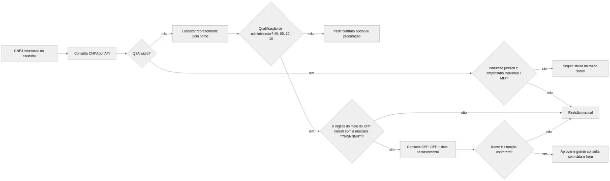

Quadro de Sócios (QSA): Como Consultar os Sócios de um CNPJ
Saber quem está por trás de um CNPJ (Cadastro Nacional da Pessoa Jurídica) é uma das primeiras perguntas de qualquer cadastro B2B. O fornecedor novo tem sócios com histórico? Quem assina o contrato pode mesmo representar a empresa? A resposta oficial está no quadro de sócios e administradores, o QSA, que a Receita Federal mantém para cada empresa. Este guia mostra o que o quadro de sócios traz e o que fica de fora. Depois, explica onde consultar, como usar os sócios em KYB, fraude e crédito e como levar os dados ao sistema sem tropeçar na LGPD (Lei Geral de Proteção de Dados Pessoais).
O que é o quadro de sócios (QSA) de um CNPJ
QSA é a sigla de Quadro de Sócios e Administradores. É a parte do cadastro do CNPJ que lista as pessoas físicas e jurídicas que compõem a sociedade ou que a administram. A empresa informa o quadro de sócios à Receita na abertura e o atualiza a cada alteração contratual. Por isso, o QSA mostra o que foi registrado, e não necessariamente o que acontece na prática. Um sócio que vendeu a parte dele, mas cuja alteração ainda não foi registrada, continua no quadro. Um "laranja" também aparece lá como se fosse o dono de verdade.
Quem aparece no QSA
Cada linha do quadro de sócios representa uma pessoa e o papel dela na empresa. O papel vem como um código de qualificação. Uma limitada costuma ter sócios e sócios-administradores. Já uma sociedade anônima mostra diretores, presidente e conselheiros. Uma associação, por sua vez, traz o presidente e outros dirigentes.
O sócio pode ser de três tipos, segundo o layout oficial da base pública do CNPJ, que a Receita publica todo mês (os dados abertos, explicados mais abaixo):
- pessoa jurídica, identificada pelo CNPJ;
- pessoa física, identificada pelo CPF (Cadastro de Pessoas Físicas), que vem mascarado;
- estrangeiro, sem CPF ou CNPJ na base, mas com o código do país.
Empresas sem quadro de sócios
Nem toda natureza jurídica comporta QSA. O caso mais comum é o empresário individual, grupo em que entra o MEI (microempreendedor individual). Ali não existe sociedade: há um titular, que responde pela empresa. Se você consultar o QSA de um MEI, é normal receber o quadro vazio. Mesmo assim, o nome do titular costuma aparecer na própria razão social.
O seu código precisa tratar esse caso como resposta válida, e não como erro. Um onboarding que exige "pelo menos um sócio" no quadro de sócios trava todo cliente MEI. Em vez disso, use a natureza jurídica, o código que diz o tipo de empresa (limitada, S.A., empresário individual etc.) e que vem na consulta de CNPJ comum. Se ela for 213-5, Empresário (Individual), caso do MEI, o QSA vazio é esperado.
Os códigos de qualificação mais comuns
A Receita publica a tabela de qualificações junto com os dados abertos do CNPJ. A versão de setembro de 2026 tem mais de 60 códigos. Estes são os que mais aparecem num cadastro B2B:
| Código | Qualificação | Onde costuma aparecer |
|---|---|---|
| 05 | Administrador | Limitadas com administrador não sócio |
| 10 | Diretor | Sociedades anônimas e cooperativas |
| 16 | Presidente | Sociedades anônimas, associações e fundações |
| 19 | Síndico (Condomínio) | Condomínios edilícios |
| 22 | Sócio | Sócio sem poder de administração |
| 37 | Sócio Pessoa Jurídica Domiciliado no Exterior | Empresas com sócio estrangeiro |
| 38 | Sócio Pessoa Física Residente no Exterior | Empresas com sócio estrangeiro |
| 49 | Sócio-Administrador | Limitadas, a qualificação mais frequente |
| 50 | Empresário | Responsável do empresário individual, no cadastro da empresa (não na lista de sócios) |
| 65 | Titular Pessoa Física Residente ou Domiciliado no Brasil | Titular de empresa individual de responsabilidade limitada, como a antiga EIRELI; não aparece no MEI |
O código 50 explica por que um MEI tem QSA vazio e, mesmo assim, um responsável: ele fica no campo de qualificação do responsável, no cadastro da empresa, e não na lista de sócios. Guarde o código, não o texto. Assim, quando a Receita ajustar uma descrição, você atualiza a tabela de domínio sem tocar nos registros.
Na prática: para saber se alguém pode assinar pela empresa, olhe a qualificação. Um "22 Sócio" é dono de uma parte do capital (as cotas), mas não administra. Já "49 Sócio-Administrador", "05 Administrador" ou "10 Diretor" indicam poder de gestão, conforme o contrato social.
O que a consulta QSA CNPJ mostra e o que fica de fora
A consulta QSA CNPJ entrega um retrato de quem está na empresa. Porém, o retrato tem lacunas que os times de produto descobrem tarde, quase sempre em produção.
Campos do QSA na base pública
O layout dos dados abertos define o arquivo de Sócios. A tabela resume o que vem no quadro de sócios público e o que não vem:
| Informação | Vem no QSA público? | Observação para o sistema |
|---|---|---|
| Nome do sócio ou razão social do sócio PJ | Sim | Texto em maiúsculas; normalize antes de comparar |
| Tipo do sócio (PJ, PF ou estrangeiro) | Sim | Códigos 1, 2 e 3 |
| CNPJ do sócio pessoa jurídica | Sim, sem máscara, mas às vezes incompleto | Na base de setembro de 2026, vem só a raiz: os oito primeiros caracteres, que identificam a empresa e não a filial |
| CPF do sócio pessoa física | Sim, mascarado | Só os seis dígitos do meio ficam visíveis |
| Qualificação do sócio | Sim | Código da tabela de qualificações |
| Data de entrada na sociedade | Sim | Ajuda a ver mudanças recentes |
| País do sócio estrangeiro | Sim | Código de país, da tabela de Países |
| Representante legal (CPF, nome e qualificação) | Sim, quando houver | Sócio menor, incapaz ou estrangeiro; CPF também mascarado |
| Faixa etária | Sim | Código de 0 a 9, calculado a partir da data de nascimento |
| Percentual ou valor das cotas de cada sócio | Não | Está no contrato social, na Junta Comercial |
| Capital social | Não no QSA | Vem no cadastro da empresa, como valor total |
| Data de saída de quem deixou a sociedade | Não | Quem sai simplesmente deixa de constar |
A faixa etária usa esta escala: 0 = não se aplica (sócio pessoa jurídica ou estrangeiro); 1 = 0 a 12 anos; 2 = 13 a 20; 3 = 21 a 30; 4 = 31 a 40; 5 = 41 a 50; 6 = 51 a 60; 7 = 61 a 70; 8 = 71 a 80; 9 = acima de 80.
Por que o CPF do sócio vem mascarado
Na base pública, o CPF do sócio e o do representante legal aparecem com parte dos dígitos escondida. A regra oficial oculta os três primeiros e os dois verificadores. Pense no CPF fictício 123.456.789-09: na base, ele viraria ***456789**. Só os seis do meio ficam visíveis, como o cartão de crédito que aparece só com o final na fatura.
O próprio documento de metadados da Receita cita a base da regra: o art. 129, § 2º, da Lei 13.473/2017, a LDO (Lei de Diretrizes Orçamentárias) de 2018. Por isso, nenhuma API que se apoie nos dados públicos deveria prometer o CPF completo do sócio. Se um fornecedor prometer, vale perguntar de onde o dado vem.
Participação e capital: o que o QSA não responde
O quadro de sócios não diz quanto cada sócio tem da empresa. O capital social existe no cadastro, mas como valor total da empresa, sem divisão por sócio. Para saber quem detém 90% das cotas, você precisa do contrato social ou da ficha cadastral da Junta Comercial.
Isso pesa em KYB (Know Your Business, conheça a empresa) e na busca pelo beneficiário final, a pessoa física que, no fim da cadeia de empresas, de fato controla o negócio. O QSA mostra quem está na sociedade, mas não mostra quem controla. Uma empresa com dez sócios pode ter um deles com quase todo o capital.
Onde consultar os sócios do CNPJ e como guardar o histórico
Existem três caminhos oficiais ou derivados do oficial. A escolha depende do volume e do uso que o dado vai ter.
No site da Receita, com captcha
O comprovante de inscrição e de situação cadastral tem uma opção para consultar o QSA. Você digita o CNPJ, resolve o captcha e vê nome e qualificação de cada integrante. Para consultar QSA CNPJ de um fornecedor de vez em quando, resolve.
Para integrar a um sistema, não serve. O captcha existe justamente para impedir automação, e raspar HTML quebra na primeira mudança de layout. Além disso, a tela não guarda registro de quando você consultou, e esse registro importa numa auditoria.
Nos dados abertos do CNPJ, arquivo de Sócios
A Receita publica a base completa do CNPJ no repositório de dados abertos, em pastas mensais. A de setembro de 2026, por exemplo, saiu em 14/09 e traz o arquivo de Sócios dividido em dez partes compactadas. Os campos seguem o layout publicado nos metadados do CNPJ.
A base serve bem para análise em lote, estudos de mercado e enriquecimento de carteira. Por outro lado, pede infraestrutura: download de vários gigabytes, carga em banco relacional e junção por CNPJ básico, os oito primeiros dígitos. E o dado fica até um mês atrasado: uma troca de sócio feita logo depois da publicação só aparece na pasta do mês seguinte.
Por API, dentro do fluxo do sistema
A API é o caminho para quem precisa da consulta sócios CNPJ no momento do cadastro, da análise de crédito ou da assinatura. Você manda o CNPJ e recebe JSON com o quadro de sócios, sem captcha e sem montar base própria. Em seguida, grava a resposta com data e hora da consulta.
Se o seu onboarding precisa do QSA e da validação do CPF do administrador, teste a API de CNPJ e CPF da Receita do Hub do Desenvolvedor. Ela faz as duas consultas com um único token e um único plano. A resposta do CNPJ traz o quadro de sócios junto com razão social, situação, natureza jurídica e CNAE (Classificação Nacional de Atividades Econômicas), em JSON ou XML. O teste grátis dura 3 dias.
Um exemplo de consulta em Python
Os nomes de campos abaixo são ilustrativos. Confira os nomes reais na documentação do seu painel antes de codificar.
import re
import requests
URL_DA_API = "https://URL_DA_API/cnpj" # confira no painel
TOKEN = "SEU_TOKEN"
def normalizar_cnpj(cnpj):
# mantém letras: o CNPJ pode ser alfanumérico
return re.sub(r"[^0-9A-Z]", "", cnpj.upper())
def consultar_qsa(cnpj):
resp = requests.get(
URL_DA_API,
params={"cnpj": normalizar_cnpj(cnpj), "token": TOKEN},
timeout=15,
)
resp.raise_for_status()
dados = resp.json()
return dados.get("qsa") or [] # lista vazia é válida (ex.: MEI)
for socio in consultar_qsa("12.345.678/0001-95"):
print(socio["nome"], socio["qualificacao"])
Repare no comentário sobre letras. Desde julho de 2026, novos CNPJs podem ter letras nas 12 primeiras posições, e o artigo sobre o CNPJ alfanumérico mostra o que muda na validação. Para os outros campos da resposta, o guia da API de consulta de CNPJ detalha razão social, endereço e situação cadastral. Quem também usa a atividade da empresa no cadastro encontra o passo a passo em como consultar o CNAE pelo CNPJ.
Depois da consulta: como modelar o quadro de sócios no banco
O quadro de sócios é uma relação de um para muitos (1:N): uma empresa, vários integrantes. O exemplo é para PostgreSQL. Guarde-o numa tabela própria, e não em colunas da tabela de empresas. Além disso, registre quando cada sócio foi visto pela primeira e pela última vez.
CREATE TABLE empresa_socio (
id BIGSERIAL PRIMARY KEY,
cnpj_empresa CHAR(14) NOT NULL,
tipo_socio SMALLINT NOT NULL, -- 1 PJ, 2 PF, 3 estrangeiro
nome VARCHAR(200) NOT NULL,
documento VARCHAR(14), -- CNPJ (completo ou raiz) ou CPF mascarado
qualificacao CHAR(2) NOT NULL,
data_entrada DATE,
visto_primeiro TIMESTAMP NOT NULL,
visto_ultimo TIMESTAMP NOT NULL,
ativo BOOLEAN NOT NULL DEFAULT TRUE,
UNIQUE (cnpj_empresa, tipo_socio, nome, qualificacao) -- permite atualizar visto_ultimo
);
Como a base pública não informa a data de saída, o histórico nasce das suas consultas. Se um sócio sumiu da resposta de hoje, marque ativo = false e mantenha a linha. Assim você responde, meses depois, quem era administrador na data em que o contrato foi assinado.
O sócio pessoa jurídica pede um cuidado a mais. Ele tem o próprio quadro de sócios, que pode ter outra PJ, e assim por diante. Antes de descer a cadeia, confira se a sua fonte devolve o CNPJ completo do sócio PJ ou só a raiz de oito caracteres. Se vier só a raiz, consulte pela matriz (raiz + 0001 + dígitos verificadores), porque o QSA é o mesmo para matriz e filiais. Para chegar às pessoas físicas, use duas travas: um limite de níveis (no exemplo, cinco) e uma lista das empresas já visitadas, para não entrar em loop quando a empresa A é sócia da B e a B é sócia da A:
// consultarQsa deve aceitar CNPJ completo ou só a raiz (8 caracteres)
async function cadeiaSocietaria(cnpj, consultarQsa, nivel = 0, vistos = new Set()) {
const raiz = cnpj.slice(0, 8); // mesma empresa, com ou sem filial
if (nivel > 4 || vistos.has(raiz)) return []; // limite e proteção contra ciclo
vistos.add(raiz);
const socios = (await consultarQsa(cnpj)) || [];
const resultado = [];
for (const s of socios) {
resultado.push({ ...s, nivel, empresa: cnpj });
if (Number(s.tipo) === 1 && s.documento) { // sócio PJ: desce um nível
resultado.push(...await cadeiaSocietaria(s.documento, consultarQsa, nivel + 1, vistos));
}
}
return resultado;
}
Cada nível custa uma consulta. Por isso, faça cache das PJs que aparecem com frequência, como holdings e fundos.
Como usar o quadro de sócios em KYB, fraude e crédito, dentro da LGPD
Risco procura sinais de fraude, compliance quer saber quem está por trás da empresa e produto precisa saber quem pode assinar. Veja como o quadro de sócios atende cada caso.
Due diligence e KYC/KYB
Em KYC (Know Your Customer, conheça seu cliente) de pessoa jurídica, o QSA responde quem são as pessoas por trás da empresa. Na due diligence de fornecedor ou de aquisição, ele dá os nomes que, cruzados com outras bases, mostram se algum sócio também aparece em empresa concorrente, em empresa inidônea (impedida de contratar com o poder público) ou ligada a pessoa politicamente exposta (PEP, quem ocupa ou ocupou cargo público relevante). O artigo sobre KYC no e-commerce mostra como encaixar essas checagens num fluxo de cadastro.
Sinais de risco no quadro de sócios
Nenhum sinal isolado prova fraude. Combinados, porém, os sinais pedem análise manual antes de aprovar o cadastro ou liberar crédito:
- empresa aberta há poucas semanas que já pede limite alto;
- sócio pessoa física presente em dezenas de empresas abertas em sequência (o que exige busca reversa pelo nome na base aberta), padrão típico de laranja, a pessoa que empresta o nome para empresas que outra controla;
- troca de todo o quadro de sócios pouco antes do pedido de crédito, visível pela data de entrada;
- sócio PJ estrangeiro, cujo beneficiário final o QSA não mostra e precisa ser levantado em outra fonte;
- faixa etária incompatível com o perfil, como sócio na faixa 2 (13 a 20 anos) à frente de uma empresa com faturamento alto;
- assinante do contrato ausente do QSA e sem procuração.
Cruzar esses sinais com outras fontes é o tema do artigo sobre prevenção de fraudes no onboarding com cruzamento de dados. O quadro de sócios entra ali como uma das camadas, ao lado de endereço, telefone e situação cadastral.
Análise de crédito e quem assina o contrato
Na análise de crédito, o quadro de sócios liga a empresa às pessoas que respondem por ela. Uma empresa aberta há dois meses cujos sócios administram outras empresas ativas há dez anos é um risco bem diferente de uma empresa da mesma idade com sócios que não aparecem em nenhum outro cadastro.
Na assinatura, a pergunta é mais objetiva: essa pessoa pode representar a empresa? Primeiro, procure o nome dela no QSA. Depois, confira a qualificação. Se ela aparece só como "22 Sócio", sem administração, peça o contrato social ou uma procuração. Afinal, o QSA indica quem administra, mas os poderes exatos estão no contrato.
Cruzar o sócio com a consulta de CPF
Muita gente espera achar o CPF completo no quadro de sócios. Como ele vem mascarado, a validação depende de o próprio cliente informar o CPF no onboarding. O fluxo correto tem quatro passos:
- o representante informa nome, CPF e data de nascimento no cadastro;
- o sistema consulta o QSA do CNPJ e localiza a pessoa pelo nome;
- se a sua fonte trouxer o CPF mascarado do sócio (como a base de dados abertos), o sistema confere se os seis dígitos visíveis batem com o CPF informado; se trouxer só nome e qualificação, o cruzamento é pelo nome;
- a consulta de CPF confirma nome e situação cadastral na Receita.
A API de consulta de CPF recebe CPF e data de nascimento e devolve nome completo e situação cadastral. Juntando as duas respostas, você sabe se a pessoa que está no cadastro é a mesma que está no quadro de sócios.
import re
import unicodedata
def so_digitos(valor):
return re.sub(r"\D", "", valor or "")
def normalizar_nome(nome):
sem_acento = unicodedata.normalize("NFKD", nome).encode("ascii", "ignore").decode()
return " ".join(sem_acento.upper().split())
def cpf_bate_com_mascara(cpf_informado, cpf_mascarado):
# máscara oficial: ***NNNNNN** (seis dígitos do meio visíveis)
cpf = so_digitos(cpf_informado)
mascara = re.sub(r"[^0-9*]", "", cpf_mascarado or "")
m = re.fullmatch(r"\*{3}(\d{6})\*{2}", mascara)
if not m or m.group(1) == "000000" or len(cpf) != 11:
return False # sem máscara válida ou placeholder de representante ausente
return cpf[3:9] == m.group(1)
def representante_confere(socio, cpf_informado, nome_receita):
"""Devolve 'ok', 'revisar' ou 'recusar'."""
if not cpf_bate_com_mascara(cpf_informado, socio.get("documento")):
return "recusar"
if normalizar_nome(socio["nome"]) != normalizar_nome(nome_receita):
return "revisar" # grafia diferente: revisão manual
return "ok"
Seis dígitos batendo não provam identidade sozinhos: há mil CPFs válidos com os mesmos seis dígitos do meio, porque os três primeiros variam e os dois últimos são calculados. Com o nome conferido e a consulta de CPF, a chance de coincidência fica perto de zero. Por isso a função devolve "revisar" quando só o nome diverge: grafia diferente vai para revisão manual, e não para recusa.
Atenção: não tente "completar" o CPF mascarado por força bruta, testando combinações na consulta de CPF. Além de gastar chamadas, essa prática trata dado pessoal sem finalidade legítima e sem base legal. O CPF completo vem do titular, no cadastro.

Quer rodar esse cruzamento no seu onboarding? Crie uma conta no Hub do Desenvolvedor e teste o QSA e a validação de CPF com cadastros reais da sua base. As duas consultas saem do mesmo token, o que simplifica o código e a cobrança.
LGPD: o que fazer com os dados dos sócios
O nome e o CPF parcial de um sócio são dados pessoais. Logo, a Lei Geral de Proteção de Dados Pessoais, Lei 13.709/2018, vale para eles, mesmo vindos de base pública. O art. 7º, § 3º, manda considerar, no dado de acesso público, a finalidade, a boa-fé e o interesse público que justificaram sua disponibilização. Na prática, dado público não é dado livre: use-o para fins compatíveis com o motivo da publicação, como saber quem responde por uma empresa, e não para montar lista de marketing.
Primeiro, defina e registre a base legal. Prevenção a fraudes e KYB costumam se apoiar numa destas hipóteses do art. 7º:
- obrigação legal ou regulatória (inciso II);
- legítimo interesse (inciso IX);
- proteção do crédito (inciso X);
- execução de contrato (inciso V), só quando o próprio sócio é parte do contrato.
Quem decide é o seu jurídico, caso a caso.
Depois, respeite a finalidade. Um quadro de sócios buscado para KYB não deve virar lista de prospecção. Guarde também só o necessário: se a faixa etária não entra em nenhuma regra, não a armazene. Por fim, não mostre o CPF, nem mascarado, a quem não precisa dele. Na tela do vendedor, nome e qualificação bastam.
Perguntas frequentes sobre o quadro de sócios
O quadro de sócios mostra o CPF completo dos sócios?
Não. Na base pública da Receita, o CPF do sócio pessoa física vem mascarado. Os três primeiros dígitos e os dois verificadores ficam ocultos, como em ***456789** (exemplo fictício). O CPF completo precisa ser informado pelo próprio sócio no cadastro.
O QSA mostra quanto cada sócio tem da empresa?
Não. O quadro de sócios traz nome, qualificação e data de entrada, mas não o percentual ou o valor das cotas. A participação de cada sócio está no contrato social registrado na Junta Comercial.
MEI tem quadro de sócios?
Não. O MEI é empresário individual: tem um titular, e não sócios. Por isso a consulta do QSA de um MEI costuma voltar vazia, e o sistema deve tratar isso como resposta válida.
Com que frequência a Receita atualiza os dados de sócios?
Nos dados abertos do CNPJ, a Receita publica uma pasta nova por mês, com o arquivo de Sócios. Uma API que consulta o cadastro da Receita no momento da chamada reflete mudanças antes da base mensal; já uma API montada sobre os dados abertos herda a mesma defasagem. Pergunte ao fornecedor qual é a fonte.
Posso consultar os sócios de um CNPJ sem violar a LGPD?
Pode, desde que haja finalidade legítima e base legal, como prevenção a fraudes, KYB ou proteção do crédito. Guarde só o necessário, não exponha o CPF e registre por que a consulta foi feita.
Resumo para levar ao código
O quadro de sócios responde quem compõe e quem administra uma empresa. Ele tem limites claros: CPF mascarado, nenhuma participação por sócio e nenhum registro de quem saiu. No código, trate QSA vazio como resposta válida para MEI e guarde o histórico a partir das suas consultas. Já o CPF do administrador se valida com o dado que ele mesmo informa.
Para juntar a consulta de sócios do CNPJ e a validação de CPF no mesmo fluxo, teste a API de CNPJ e CPF da Receita do Hub do Desenvolvedor. Se precisar só dos dados da empresa, a API de CNPJ traz os sócios junto com os dados cadastrais da empresa.